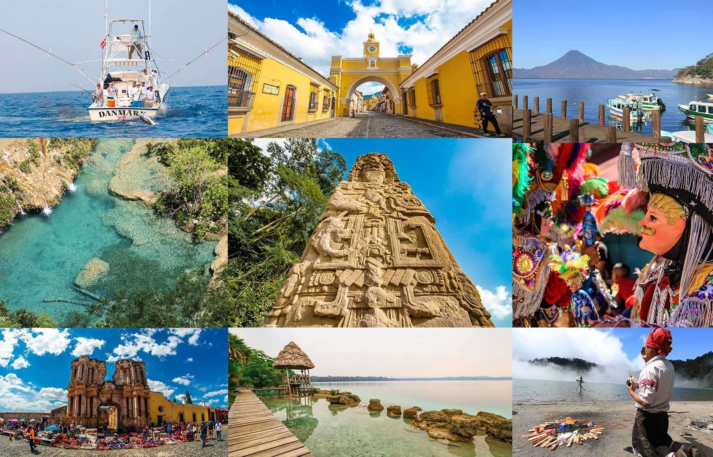
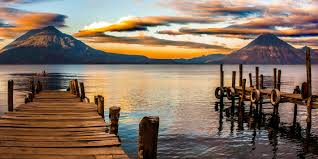
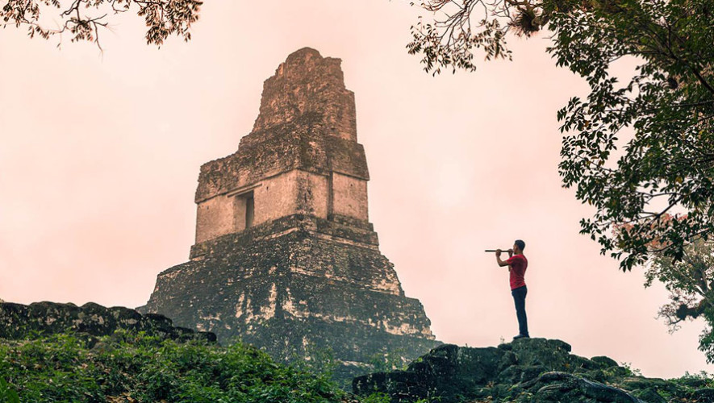

Conoce esta pequeña lista de los lugares 3 turísticos de Guatemala más conocidos. Encontrarás destinos destacados a nivel mundial y algunas otras maravillas naturales. Sin duda alguna Guatemala es un destino con mucho por visitar, desde piscinas naturales hasta las pirámides mayas más conocidas del mundo. Si planeas visitar Guatemala, sin duda esta lista te será de mucha ayuda.
1. Lago de Atitlán
es uno de los principales destinos turísticos de Guatemala y ha sido nombrado uno de los lagos más bellos del mundo.
Los visitantes pueden pasear por los pueblos tradicionales alrededor del mismo lago, hogares de la cultura maya, conocer su diversidad, sus tradiciones, la herencia indígena que todavía se manifiesta en las costumbres, los trajes y los idiomas de los habitantes nativos de la región.
2. Tikal y Petén
Si te gusta la historia, no puedes perderte Tikal. Es un sitio arqueológico en el norte del país, en el departamento de Petén, donde se encuentra la ciudad maya más grande y mejor conservada.
Los orígenes se remontan al año 400 a. C. y, durante los siglos siguientes, Tikal se convirtió en una de las ciudades mayas más grandes y poderosas, llegando a su apogeo durante el Período Clásico (200-900 d. C.).
Alta Verapaz, Cobán, Semuc Champey
Los departamentos de Alta y Baja Verapaz son muy ricos en flora y fauna. A lo largo del camino se pueden encontrar muchos lagos, montañas y cascadas. Un lugar perfecto para disfrutar del ecoturismo, las verapaces ofrecen una gran concentración de reservas naturales, sistemas de cuevas y selvas tropicales.
En esta región destaca Semuc Champey, ubicado a unas dos horas de Cobán.